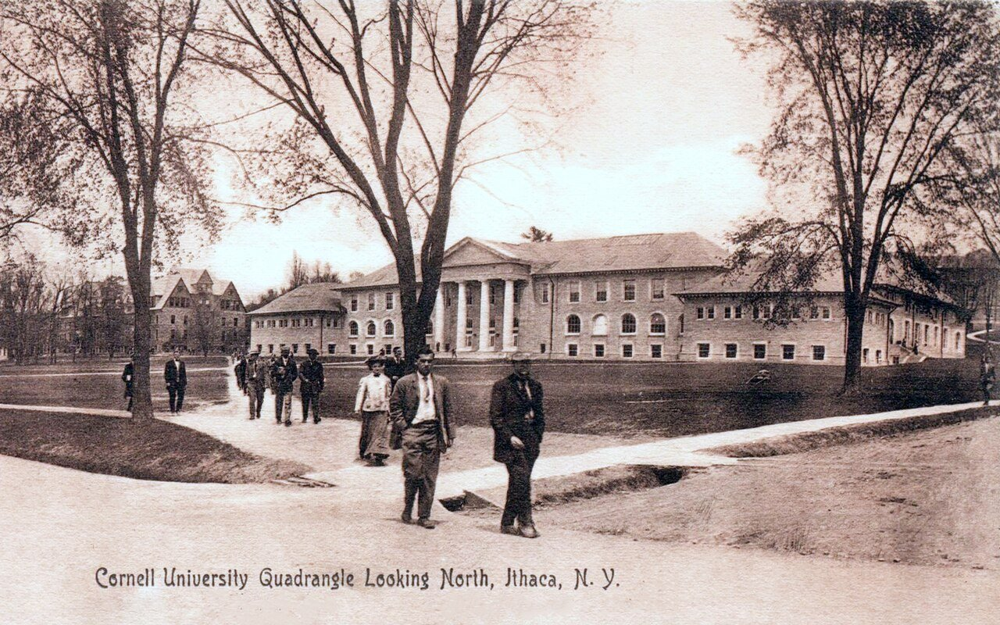
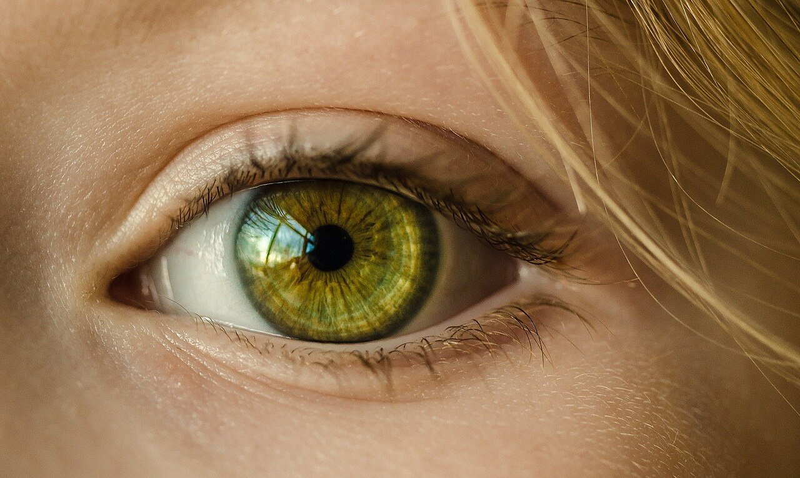
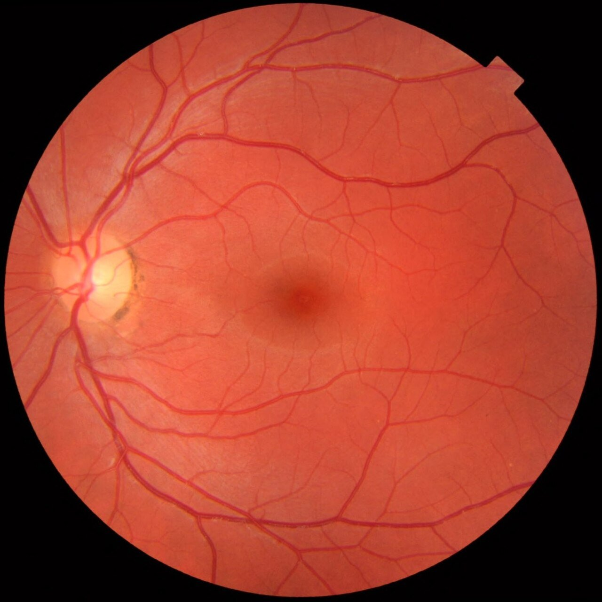
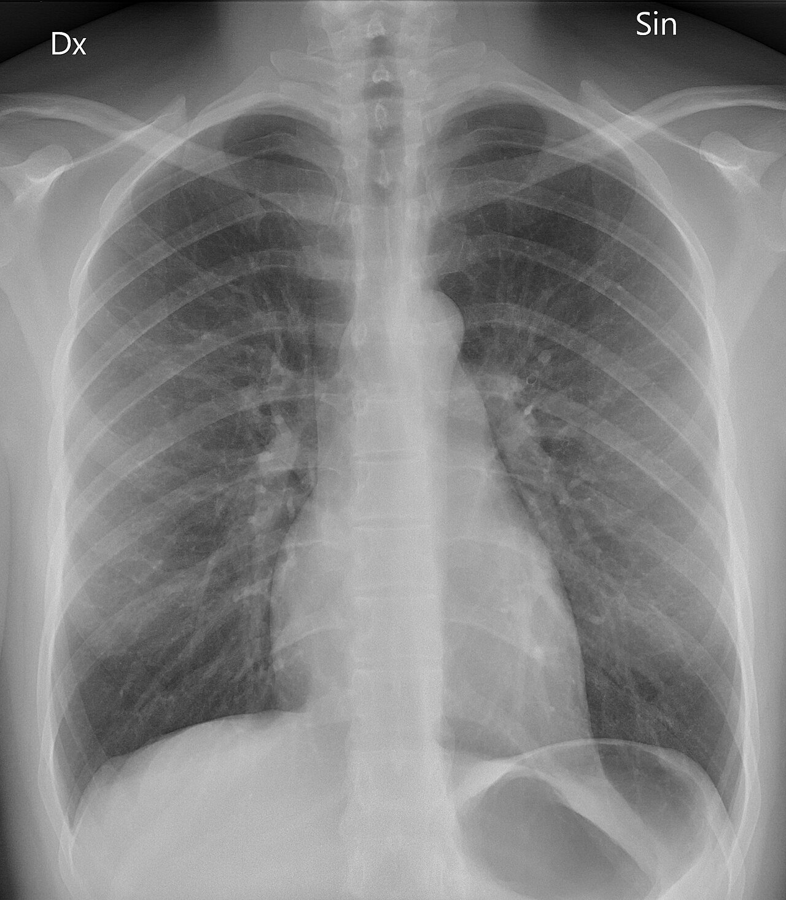
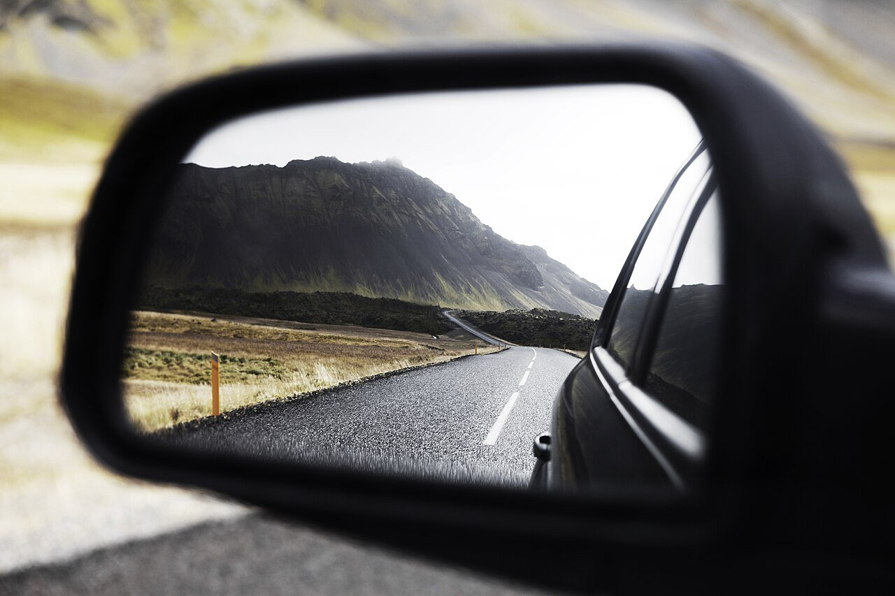

人間・心理 Human & Mind目の前にあるのに、なぜ見落とす？
画面の真ん中をゴリラが歩いても、約半数の人が気づかない。有名な心理学の実験から、話し相手のすり替わり、目のしくみ、専門家の見落としまでを、棒グラフと図でたどります。あなたの目は、本当に「全部」見えていますか？
2026.10.22 UP 約5分で読める 文：SOMOSOMO編集部
写真：Shibuya crossing／Syced（2025年、CC0。写真はイメージです）
アメリカ、1999年。ハーバード大学の心理学者ダニエル・シモンズとクリストファー・チャブリスは、学生たちに75秒の短いビデオを見せました。白いシャツと黒いシャツの2チームが、バスケットボールをパスし合う映像です。お願いしたのは「片方のチームのパスの回数を数えてください」ということだけでした。
映像の途中、ゴリラの着ぐるみを着た人が、選手たちの間を5秒かけて横切ります。見終わったあと「何か変わったものを見ましたか」とたずねると、多くの人が「何も」と答えました。目の前を堂々と歩いていたのに、なぜ気づかなかったのでしょうか。
In a word
目に映ることと、気づくことは別のこと。脳は入ってくる情報のごく一部に注意 を向け、それ以外を意識にのぼらせない。見落としは、大量の情報をさばくための絞りこみ の裏返しだと考えられている。
01
The Invisible Gorilla
「目に映る」と「気づく」は、別のこと
この実験には228人が参加し、条件をそろえて分析できた192人の結果が報告されました。実は、ゴリラの代わりに傘をさした女性が横切る映像も用意されていました。全体では46%の人が、その出来事に気づきませんでした。 ゴリラだけで見ると、気づかなかったのは56%。半分以上が見落としたことになります。
この現象は「非注意性盲目」と呼ばれます。目は見えているのに、注意を向けていないものに気づけない状態のことです。名前をつけたのは、アメリカの心理学者アリエン・マックとアーヴィン・ロックで、1998年に同じ題の本を出しています。
こんなに大きくても、見落とす 実験で歩いたのは本物ではなく、着ぐるみのゴリラです。注意がボールに向いていると、画面の真ん中を歩くゴリラにも気づきにくくなりました。写真はイメージです。写真：Westlicher Flachlandgorilla, Zoo Hannover ／XenonX3（2011年、CC0）、Basketball hitting a basketball goal ／noahsilliman（2017年、CC0）
面白いのは、条件によって結果が大きく変わったことです。パスを数えるのが難しいほど、見落としは増えました。そして、黒いゴリラは、黒チームを数えていた人のほうがよく気づきました。 いま探している色に近いものは、注意の網に引っかかりやすいようです。
Fig.01 横切るものに気づいた割合
ゴリラ 44%
ゴリラ 58%
ゴリラ 27%
ゴリラ 8%
傘の女性 65%
見どころは、黒チームと白チームの差。同じゴリラでも、何に注目していたかで気づく人の数が倍以上変わりました。赤い棒は、選手とゴリラを別々に撮って半透明に重ねた、少し見えにくい映像で白チームを数えた条件です（2つの条件で同じ値）。それぞれ12人中1人しか気づいていません。数字は Simons と Chabris の論文（1999年）の表によります。
02
Change Blindness
話し相手が入れ替わっても、半分は気づかない
見落とすのは、画面の中の出来事だけではありません。シモンズは、別の研究者ダニエル・レヴィンとともに、もっと大胆な実験を、本物の大学のキャンパスで行いました。1998年に発表された、通称「ドアの実験」です。
地図を持った実験者が、通りがかりの人に道をたずねます。10〜15秒ほど話したところで、大きなドアを運ぶ2人組が、実験者と歩行者の間を無理やり通りぬけます。ドアに隠れたのは約1秒。その間に、道をたずねていた人が別の人と入れ替わりました。
Fig.02 ドアの実験の3コマ
① 道をたずねる
② ドアが通る
③ 話を続ける
実験者A
歩行者
約1秒、見えない
実験者B
歩行者
15人中8人が、入れ替わりに気づかなかった
見どころは②の「約1秒」。服も背丈も声もちがう人に替わったのに、多くの人はそのまま道案内を続けました。Simons と Levin の論文（1998年）の実験1をもとに描いた図です。
実験はアメリカのコーネル大学で、15人の歩行者を相手に行われました。服装も見た目も声もちがったのに、入れ替わりに気づいたのは7人だけ。気づかなかった人たちは、何ごともなかったように道案内を続けたそうです。
このように、目の前で起きた変化に気づかないことを「変化盲」といいます。1か所だけちがう2枚の写真を、間に一瞬の空白をはさんで交互に見せる実験でも、ちがう部分を見つけるまでに1分以上かかる人がいる と報告されています。

実験の舞台になったキャンパス コーネル大学の中庭を写した、1915年ごろの絵はがき。約80年後、この大学の構内で、話し相手が入れ替わる実験が行われました。写真：Cornell University - Arts Quadrangle ／作者不明（1915年ごろ、パブリックドメイン）
面白いことに、気づいた7人はみな、実験者と同じ年ごろの学生だったそうです。研究者たちは、相手を「同じ仲間の1人」として細かく見ていたからではないか、と考えました。相手を「道をたずねる人」としか見ていなければ、顔や服の細部は記憶に残りにくいと考えられます。
03
The Narrow Spotlight
くっきり見えるのは、親指の爪2つ分だけ
そもそも、目はどこまで見えているのでしょう。目の奥には、光を受け取る膜「網膜」があります。その中心にある小さなくぼみ「中心窩（ちゅうしんか）」は、色や形を感じる細胞がとくに密に集まった場所です。細かいところまでくっきり見えるのは、この中心窩がとらえる、わずか2度ほどの範囲 だけです。
2度とは、腕をまっすぐのばしたときの、親指の爪2つ分くらいの幅です。その外側は、私たちが思っているよりずっとぼんやりしています。それでも視界全体がくっきり見える気がするのは、目がすばやく動いて、脳が見えたものをつなぎ合わせているからです。
Fig.03 くっきり見える範囲は、ほんの少し
まわりは、ぼんやり
（動きや明るさはわかる）
くっきり＝約2度
中心窩は、網膜の1%に満たない広さなのに
脳の「見る部分」の半分以上を使うといわれる
見どころは、灰色の扇の中の細い赤い線。くっきり見えているのはそこだけです。扇の広さは実際の視野よりせまく描いています。数字は英語版 Wikipedia の「Fovea centralis」「Saccade」の項目によります。
景色を眺めるとき、視線は1秒に2〜3回、止まっては跳ぶことをくり返しています。しかも視線が跳んでいる一瞬は、ほとんど見えていないことがわかっています。私たちは、とぎれとぎれの「のぞき穴」の映像を、脳でつないで見ている のです。
ここで大切になるのが「注意」です。注意は、舞台を照らすスポットライトにたとえられます。明かりの当たったものは、細かく分析されて意識にのぼります。当たらなかったものは、目に入っていても、気づかれないまま通りすぎていきます。


瞳の奥の、小さなくぼみ 右は目の奥（眼底）の写真で、中央の少し暗い点のあたりが中心窩です。眼底写真の中で、中心窩の左に明るく見える円は、神経が束になって出ていく部分です。瞳の写真はイメージです。写真：GreenEye3 ／Skitterphoto（2016年、CC0）、Fundus photograph of normal left eye ／Mikael Häggström（2012年、CC0）
04
Even the Experts
プロの目でも、ゴリラは消える。それは欠点ではない
見落としは、慣れた人なら防げるのでしょうか。2013年、アメリカのトラフトン・ドリューらは、肺のCT画像を読む専門家である放射線科医24人に、がんの疑いがある小さな影を探してもらいました。最後に見せた症例の画像には、影の平均の48倍以上も大きなゴリラの絵 が、こっそり差しこまれていました。
結果は、24人中20人、つまり83%がゴリラに気づきませんでした。しかも視線の動きを記録すると、気づかなかった20人のうち12人は、ゴリラのある場所をまっすぐ見ていたのです。視線は向いていたのに、見えていなかった ことになります。


探しているものだけが、浮かび上がる 左は胸のレントゲン写真（実験で使われたのはCTの画像）。専門家は小さな影を探すのが得意なぶん、探していない形には気づきにくくなります。右のミラーのように、運転中も見ている場所は限られています。写真はイメージです。写真：Normal posteroanterior (PA) chest radiograph ／Mikael Häggström（2017年、CC0）、Rear view mirror Snæfellsjökull ／Kalle K（2016年、CC0）
ただし、専門家の目が劣っているわけではありません。同じ画像を、専門知識のない人たちにも見せました。すると、ゴリラに気づいた人は1人もいませんでした。小さな影を見つけた割合も、放射線科医の55%に対して、12%にとどまりました。専門家は「探すべきもの」を見つける力が高いぶん、それ以外を通りすぎてしまうと考えられます。
身近な場面でも同じことが起こります。2009〜2010年に発表されたアメリカの研究では、大学の広場に一輪車に乗ったピエロを走らせました。あとでたずねると、ひとりで歩いていた人の51%がピエロを見たと答えたのに対し、携帯電話で話しながら歩いていた人は25% でした。
運転中の「見ていたはずなのに気づかなかった」も、同じしくみで起こりうると考えられています。注意を別のことに使っていると、目に映っていても気づけないことがあります。
では、見落とすのは脳の欠点なのでしょうか。多くの研究者は、そうは考えていません。目には、いつも大量の情報が流れこんでいます。それを全部くわしく処理していたら、いま大事なことに集中できません。見落としは、情報を絞って、目の前の作業をうまくこなすための仕組みの裏返し だと考えられています。
05
By the Numbers
半分が見落とし、くっきり見えるのは2度だけ
46% 画面を横切るゴリラや傘の女性に、気づかなかった人の割合Simons と Chabris（1999年）。192人の結果
83% 肺の画像にまぎれたゴリラに、気づかなかった放射線科医の割合Drew ほか（2013年）。24人中20人
約2度 目の中心で、くっきり見える範囲。腕をのばした親指の爪2つ分英語版 Wikipedia「Fovea centralis」
Here's the Fun Part
ここが面白い！
ゴリラの実験で見落とした88人は、あとで直接たずねられても、誰もゴリラや傘の女性を思い出せませんでした。映像を見直すまで、そんなことがあったと信じなかった人もいたそうです。
見落としの本当のやっかいさは、ここにあります。気づかなかったものは、気づかなかったことすら意識にのぼらない のです。だから私たちは、自分は目の前のものを全部見ている、と思いこんでしまいます。
ただし、第1章の黒いゴリラのように、探しているものに似たものは目にとまりやすくなります。
次に探し物が見つからないときは、「どこにあるか」より先に、「どんな色と形をしていたか」を思い浮かべてから、もう一度見回してみてください。